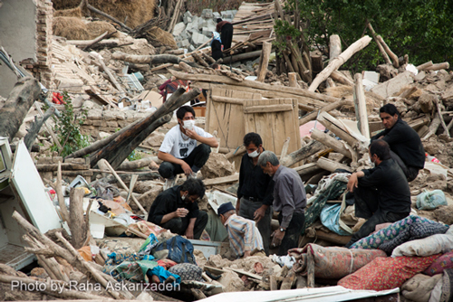
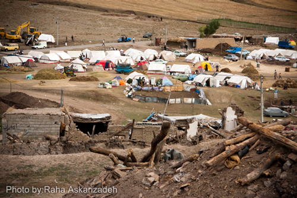

|
|

گزارشی از مناطق زلزله زده آذربایجان
زنانی که زندگی را از زیر آوار بیرون میکشند / رها عسکری زاده
پنج شنبه2 شهریور 1391
شهرستان ورزقان واقع در استان آذربایجان شرقی ،پس از کرمان، دومین تامین کننده مس کشور محسوب میشود. استخراج این فلز گرانقیمت اما در زندگی و رفاه مردم هیچ تاثیری نداشته است. روستاییان و ساکنان شهرستان ورزقان پیش از این زمینلرزه هم با فقر دست به گریبان بودند، چنانچه تا سال گذشته ورزقان بیمارستان هم نداشت.
طی زمین لرزه اخیر حدود 300 روستا در مناطق اهر، هریس و ورزقان تخریب شدهاند. بنابر گزارش خبرگزاریها در زمان وقوع زمینلرزه فرماندار وزرقان در شهر حضور نداشته و با تاخیری چند ساعته به محل ماموریت خود رسیده است. ستاد بحران استان آذربایجان شرقی وضعیت بحرانی ورزقان را مخفی نگه داشته و نخستین نیروهای امدادی پس از گذشت ۷ ساعت (ساعت ۱۲ نیمه شب) از وقوع زمینلرزه به منطقه ورزقان اعزام شدهاند و در طول این مدت تنها خود اهالی و مردم نسبت به امدادرسانی و نجات مجروحان اقدام کردهاند. به استناد گفته های مدیرکل سازمان پزشکی قانونی آذربایجانشرقی 66 درصد قربانیان زلزله زنان بودهاند.
یک هفته پس از وقوع زمین لزره 6.3 ریشتری آذربایجان، به روستاهای توابع ورزقان رفتیم. در جاده اصلی مسیر تمامی روستاهای آسیب دیده در زلزله با پارچه ای مشخص شده بود: به سمت روستای زلزله زده "باجه باج"

وارد روستا که می شوی با تلی از خاک و تیرکهای چوبی که زمانی سقف خانههایی ابتدایی بوده روبرو می شوی. بوی تند ماندگی و تعفن مشام را آزار می دهد. 4-5 نفر را بر سر ویرانهای در حال جستجو می بینیم. آنها بعد از این آوار و مصیبت به جستجویی چیزی آمدهاند که آنها را به زندگی برگرداند. زنی که دماغ و دهانش را با ماسک پوشانده، در حالی که آینه و شمعدانش را از زیر آواری که روزی خانهاش بود، بیرون میکشد و کنار بشقابهای ملامین خاک گرفتهاش میگذارد به ترکی میگوید: گفتهاند باران میبارد، آمدهایم وسایل سالم را از زیر آوارها نجات دهیم.
سطح زمین را آوار خانهها و طویلهها پوشانده. هر قدمی که برمیداری پایت روی تکهای از زندگی گذشته است. زندگیای که با همه محرومیتش لااقل سرپا بود و هنوز تبدیل به تلی از خاکروبه نشده بود. زن اشاره میکند که از دیوار نیمه ویرانی فاصله بگیریم: امروز این خانه دوباره ریزش کرده.

همین طور که با دست خاکها را کنار میزند تا ظرفی را بیرون بکشد با حسرت از دار قالیاش میگوید که زیر آوار مانده است. اگر طبیعت امان میداد، اگر دیوار خانه استوارتر بود، از فروش قالی 50 هزارتومان میگرفت. مردان روستا دار قالی خاک گرفته او را از خاک بیرون میکشند. زنگ گلهای قالی همه رنگ خاکند. اما چشم زن رنگها را میشناسد. چشمهایش از شادی میدرخشند و با خوشحالی صدایمان میکند تا قالی دستبافش را روی دار شکسته و خاک خورده نشانمان دهد. دار شکسته، خاطرهای است از زندگی که سرپا بود، هنوز نشکسته بود.
کمی آن طرفتر دختر جوان رنگ پریدهای، در حالی که جعبهای را به سختی از آوارها دور میکند با مهربانی به ما سلام میدهد. نامش سمیرا و 25 ساله است. از نوعروسی میگوید که چند روزی را عروس روستایشان شد و دیوار خانهاش فرو ریخت و حجله کوچک، گور او شد تا اهالی روستا از میان آنهمه جنازه، با یاد او چشمهایشان پر شود که: غریب بود.
باد می وزد و بوی لاشه حیوانات که گوشه کنار افتادهاند از روی خاک مصیبت زده بلند میکند. سمیرا روسری اش را جلوی بینیاش میگیرد و میگوید: زیاد اینجا نمانید، وضع بهداشت خوب نیست. به جنازه حیوانات اشاره میکند و میگوید اینها یک هفته است همینجا افتادهاند. باد آرام نمیگیرد و بو تعفن و غبار را از ویرانهها پخش میکند. سمیرا رنگ به صورت ندارد. گوشهای مینشیند و میخواهد بالا بیاورد. 4 ماهه حامله است. قرصهایی که نمیداند چه بودند و دکتر داده بود، زیر آوار مانده. می پرسیم آیا پس از زلزله از وضع جنینش باخبر است، که می گوید هنوز دکتری را در روستایشان ندیده. این روستا روز قبل شاهد حضور مقامهای بلند پایه دولتی بوده است.
چادرهای سفید هلال احمر در گوشه و کنار دیده میشود. به خاطر شرایط خاص جغرافیایی منطقه مجبور بودهاند از مناطق مسطح برای نصب چادرها استفاده کنند. همین امر موجب شده که در بعضی مناطق به خاطر نبود زمین صاف تعداد چادرها کمتر از خانوارها باشد یا نزدیک به آوار روستا نصب شود.

دختر 17 سالهای همراه مادرش کنار چادرشان ایستاده. مادرش برای بردن او به تبریز آمده اما او میخواهد در منطقه بماند. همسرش دهیار است و به روستاییان زلزله زده کمک میکند. برای همین او هم ترجیح می دهد منطقه را با وجود کمبودها و شرایط سخت ترک نکند.
میگوید: از 5 بعدازظهر که زلزله آمد تا فردا حوالی ظهر روی همین زمین نشسته بودیم تا نیروهای امداد برایمان چادر بیاورند. روستای آنان بیش از 36 کشته و تعداد زیادی زخمی داشته است.
محل اسکان روستاییان "چای کندی" بر روی قبرستان روستا، کنار جاده قرار دارد. دام و طیور روستاییان کنار چادرهایشان، در مناطقی که با چوب و تخته های به جا مانده از آوار درست کرده اند نگهداری میشود. یکی از آنها می گوید: شبها حیوانات وحشی به قصد دام هایشان از کوه ها به پایین می آیند.
بسیاری از روستاها پس از گذشت یک هفته هنوز کانکس توالت و حمام ندارند. زنان روستای"چای کندی" از توالت به جا مانده از مدرسه استفاده می کنند. اما حمام ندارند. تنها حمام منطقه آنها حمام صحرایی است که دو سه روز قبل نصب شده و فقط مردها میتوانند از آن استفاده کنند.
در روستای "زنگبار" اوضاع کمی بهتر است. اکثر چادرهایشان برق دارد و دو روزی است که از دکل، تلفن کشیدهاند و می توانند نوبتی از آن استفاده کنند.
بیرون چادرها، انبوهی از نان و آب معدنی که با کمک های مردمی به منطقه رسیده، دیده می شود. از زن جوانی می پرسیم آیا به اندازه کافی لوازم بهداشتی مانند "نوار بهداشتی" دارند؟ می گوید: نوار بهداشتی زیاد آورده اند. با شرم میخندد و آرام ادامه می دهد، از مردها خجالت کشیدیم وقتی نوار بهداشتی آوردند. اضافه می کند ما استفاده میکنیم، اما مادر من و چند نفر دیگر عادت به نوار بهداشتی ندارند. آنها از کهنه پارچه استفاده می کنند. برای او و زنان جوان دیگر استفاده از توالتی که نصب شده شرمآور است. آنها خود را به مخروبهها میرسانند و با نگهبانی از هم، این شرم ملموس و عمومی زنان را پوشش میدهند.

مطمئن که میشوند موضوع برایمان قابل درک است، زن دیگری به آرامی کنار گوش کسی که ماجرا توالت را توضیح میداد، چیزی می گوید. برایمان می گوید آن زن برای پیشگیری از بارداری از " آی یو دی " استفاده می کند. بعد از بلند کردن وسایل به جا مانده از زلزله کمردرد دارد و نگران است. می پرسیم با کسانی که در چادر بهداشت نشسته اند مشورت کرده؟ می گوید: امشب راحت نیستم؛ فردا شاید حرف بزنم.
زنان این روستا با مهربانی مارا به چادرهایشان دعوت می کنند تا کنار هم هندوانه بخوریم. زن جوان کودک شیرخوارهاش را روی زمین میگذارد و میگوید از روز زلزله تا امروز نتوانسته درست به بچه شیر بدهد. کودکش شیر خشک نمیخورد. خودش هم اشتهایش را از دست داده. میگوید: امروز که با هم هندوانه می خوریم به من خوش میگذرد. نگرانیاش از ماههای سردی است که در راه است. از شبهای بارانی پاییز. می گوید: هوا که سرد شود دیگر نمی شود با پتو در این چادرها ماند. هوای آذربایجان به زودی سرد خواهد شد. این روزها روزهای آخری است که زور خورشید به گرم کردن زمین این منطقه میرسد. اگر خاکبرداری و راهسازی در این زمان باقی مانده انجام نشود، گل و لای بحران دیگری است که این مردم باید با آن سر کنند.
این روستا به لبنیات و خصوصا کره محلی که زنان تولید میکنند شهره است. از روستا که بیرون میآییم پشت سرمان آب می ریزند. ماه آذر، زنی از اهالی روستا، کنار گوشمان می گوید: ببخشید کَره نداریم، همهشان زیر آوار مانده، وگرنه همراهتان میکردیم.
از شرمندگی، از این سخاوت، از این دستهایی که بعد از کندن گور این همه عزیز همچنان میخواهند ببخشند، زبان در دهانمان نمیچرخد که تشکر کنیم.
کودکان روی آوار روستا بازی می کنند. آواری که هنوز کامل نشده و هر دیوار نیمه فروریختهای چون حیوانی گرسنه به کمین نشسته و هر لحظه ممکن است فرو بریزد و تن کوچکی را به زیر خود بگیرد.
سایت زلزله نگاری ایران بیش از هزار پس لرزه در منطقه ورزقان را در هفته گذشته ثبت کرده است.

منطقه را ترک میکنیم و شاید دیگر هیچ گاه به آن برنگردیم و نفهمیم کودک سمیرا زنده به دنیا آمد یا نه. شاید هیچ وقت نفهمیم جای آن طویلهها و خانهها تا چند سال، خالی مانده. شاید هیچ وقت به این منطقه برنگردیم و ندانیم آیا زنان توانستند بر شرم خود غلبه کنند یا نه. زنانی که هنوز کاسهای دارند تا آب پاک را بدرقه راه مسافر کنند، زندگی را از زیر اینهمه آوار زنده بیرون میکشند و شاید نگذراند روی دار قالیها گلهای خاکی رنگ، نقش نبندد.